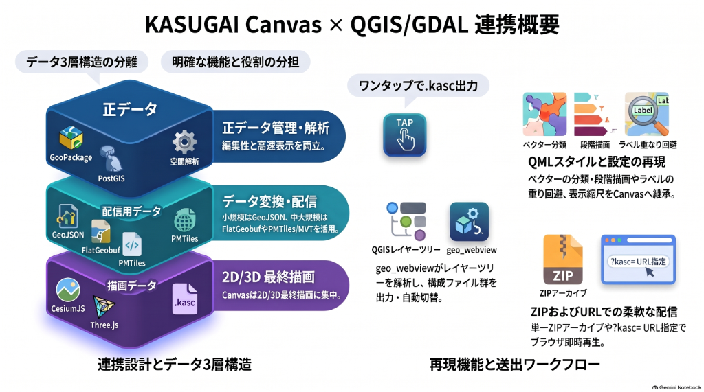

本ページは geo_webview のエクスポート物を どう指定して再現するかをまとめる。
連携方針は QGIS・GDAL連携（方針・構想）、実装済みの再現範囲は 実装済みの再現範囲 を参照。

中核：qgis: 行で ZIP を指定して QGIS を再現
QGIS連携の最も重要な利用形態は「エクスポート ZIP を qgis: インスペクタ行で指定する」ことです。
geo_webview のエクスポート出力（.kasc + DATA/）を、Re:Earth geo_suite のインスペクタに
qgis: 行として貼るだけで、ブラウザ内で .kasc 解釈・DATA/ 参照解決により
QGIS プロジェクトが再現されます。指定は 解凍済み / 未解凍の2形態です：
| 指定 | 内容 | 用途 |
|---|---|---|
qgis: <解凍済み out_dir のURL> |
フォルダURL（末尾 / または拡張子なし）→ <url>/kasugai_canvas.kasc を自動解決 → DATA/ はフォルダ基準 |
生フォルダ参照（geo_webview :8089 が out_dir をそのまま配信＝常に最新） |
qgis: <…/xxx.zip> |
未解凍 ZIP のURL → ブラウザ内で解凍 → .kasc 解釈 → DATA/… を kasczip:// メンバ参照で読み込み |
搬送・配布用（1ファイルのスナップショット。外部ホストへ置く運用） |
ZIP の生成経路（geo_webview 側）
| 経路 | 動作 | out_dir に残るか |
|---|---|---|
| パネル ZIP ボタン / index.html の DL | /export-data/kasugai_canvas_<ch>.zip がその場で固めて返す（常に直近エクスポートの最新内容） | 残らない（オンデマンド） |
| emit_zip=True（bridge/API） | エクスポートと同時に ZIP を out_dir に書き出す | 残る |
どちらの形態も最終的に「kasugai_canvas.kasc（固定名の目次）」を起点に DATA/ を解決する。
フォルダ/ZIP の中身は「.kasc ＋ DATA/（実体・.qml・シンボル画像）＋ bookmarks.xml（ある場合）」で、
テーマ別スタイル（<slug>__<theme>.qml）も theme: 行の ;style= 経由で参照される。
Canvas（kasugai_canvas）への指定方法 — フォルダ参照
Canvas 本体は qgis: ではなく .kasc の URL を ?kasc= で受け取る。
「解凍済みの .kasc + DATA/ が HTTP で参照できる」ことを前提とする（geo_webview の :8089、アプリの :8510、外部ホストなど）。
| 方法 | 記法 | 用途 |
|---|---|---|
| .kasc URL 直指定 | <engine>/?kasc=<URL>/kasugai_canvas.kasc | HTTP 参照できる任意の場所（CDN 版も同じ） |
| ローカルフォルダ選択 | ?kasc=local | file:// で解凍済みフォルダをブラウザが選択して読む |
| 登録プロジェクト | ?project=<slug> | QGIS_projects/<slug>/（project.json マニフェスト） |
| geo_webview 自動起動 | route local / auto / hosted | QGIS が :8089 / :8510 経由で ?kasc= URL を自動オープン |
?kasc= で読んだ .kasc は、その URL を基準に DATA/… 相対参照を解決して逐次 fetch する。
エクスポート時の <engine>.html / index.html（ランチャー）はこの ?kasc=<絶対URL> へ転送するだけの起動ページ。
ZIP を Canvas で直接読む
?kasc=<zip のURL> — ブラウザ内で解凍（JSZip）→ 内側の kasugai_canvas.kasc を解釈 →
DATA/… は kasczip://<id>/<path> として保持され、resolveKascUrl 経由で
メンバの blob: URL へ変換される（fetch 経由の参照は fetch シムがメンバを応答）。geo_suite の
qgis: と同じ構造で、「ZIP ファイル1個を指すだけ」が Canvas 側でも動作します。
対応状況：Cesium エンジンで実装済み。他エンジン（MapLibre/OpenLayers/Leaflet 等）の配線は
readKascSource + resolveKascUrl を同様に使うだけで対応可能（残件）。